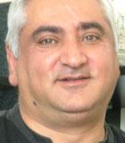

EITHER ARMENIA HAS TO FOLLOW RUSSIA OR RUSSIA WILL HAVE TO GO AGAINST ARMENIA

Artyusha Mkrtchyan
“Why don’t you like us so much?!” This question was raised when I entered the study of Artyusha Mkrtchyan who is a head of the “Caucasian Centre on Non-Traditional Methods of Conflict Settlement” Non-Governmental Organization in Gyumri. When I turned around I saw nobody in the doorway behind me. “Yes, yes! That is the reason why you, Georgians, do not like Armenians so much?!”, he made me understand that the question was directed at me, Mr. Artyusha. I began to think. I began to recall when and how I could have offended that man. But I failed to remember.
The head of the “Caucasian Center on Non-traditional methods” suddenly smiled at me widely, shook hands with me and gestured me to take a seat. Finally I guessed that it was a “non-traditional” reception. “Now what about dislike?”, I inquired. “We will talk about it, too”, was the answer. Behind the “clumsy” desk, was a flag of Armenia. On the cloth of it there were two small badges with the flags of Turkey and Azerbaijan on. I didn’t notice the Georgian flag there.
As far as I know Mr. Mkrtchyan took part in the 13th International Economic Forum in Krinits, Poland, our conversation started from that subject.
Was today’s situation in the South Caucasus discussed in the economic forum in Krinits?
It is basically the August events in Georgia that were discussed. The opinions of most of the participants coincided that Russia’s actions were very bad, while Georgia’s actions were rather silly. They supported the actions of the peaceful community. Everybody was saying that it was dangerous to “wake up a Russian bear”. Many people were sure that Moscow would not stop on what it had already done in Georgia, they would go further and move to Pridnestrovie, the Crimea part of the Ukraine. Many people guess that it was in fact America and Europe that stirred up Russia, when independence in Kosovo was declared. Many experts, including me, think that the new cold war has already started. Many European experts think that the USA and Russia were required to exercise a more balanced and steady policy. Many experts, including military ones, think that it would have been possible to avoid the bloodshed in Tskhinvali. The opinions of the experts were varied regarding the fact who first launched the armed conflict. Some part of them thought that the basis for it were the provocations aroused by Russia, while others thought that the war was launched by Georgia. Others thought that it was the USA that “gave birth” to the war.
I think that there have taken place three events in the world over the last 20 years that changed the world itself. That was the collapse of the USSR, the terroristic act in New York on September 11 and August 2008. The events in Georgia and the actions of Russia showed that the Soviet Union is being restored in its worse execution. Russia was scolded and cursed during the forum. It even came to the fact that the ex-deputy of the Minister of Defense of the USSR, the present deputy of State Duma, a general Rodionov stood up and began to sing during the discussion.
Might he have sung the hymn of Soviet Union?
Yes, that’s right. Some part of that “opera”. His nerves apparently failed him.
Do you think that the August of the year 2008 changed the South Caucasus?
I think that on the given stage the Caucasus carries a geographical concept only, but not a political or an economical one. There is not a union of friendly states in the Caucasus. In our case all the countries move to different direction ignoring the opinions of their neighbour. It is similar to an expression “Classical swan, cancer and pikes”. Georgia is on the way of entering into NATO and Europe. In my opinion, Armenia is unaware itself where it is going to since it is trying to simultaneously enter into Russia, USA, Europe, but in fact it is making no headway. Azerbaijan is not moving anywhere, it is not conversing with anybody, and it is economizing dollars for its oil. Nagorno Karabakh has also stopped somewhere in the half way. It is Moscow that showed the way to the South Ossetia and Abkhazia… In other words, there are three recognized and three unrecognized countries in the South Caucasus which are moving to hundreds of different directions. And at the same time the direction of none of the countries coincides with the direction of its neighbour. After the collapse of the USSR we have never settled our problems together. That is the reason why the South Caucasus cannot be considered as a united area except for the geographical territory drawn on the World Map. How can we bring together the relations of our viewpoints if there are no united interests? Today, we have not anything in common.
After the events in Georgia, Armenia faced serious economic problems related to the supply of various goods and energy carriers. Can Russia strengthen its economic impact in Armenia when the Armenian transit is stuck in Georgia? How do you see the way out of this deadlock situation?
Armenia was in a deadlock situation till December 6, there were no other alternatives. It looks like today another alternative may arise. Armenia is conducting active negotiations with Turkey. It is said that the borders might be opened and the diplomatic relations might be restored. In other words, the cargos will be delivered to Armenia by passing over Georgia. Being a strategical partner of Armenia, Russia will assist seeking alternative ways. As far as the West is concerned, I think that the western economic presence in Armenia will remain on the same level as it was before. At the same time, the pro-Russian policy exercised in Armenia does not appeal to the West. The West will refrain from developing economic relations with Armenia. In addition, if the West determines to undertake certain actions to exercise sanctions directed against Russia, then Armenia is sure to face this situation, as well.
What about the relations between Georgia and Armenia? Can they change depending on various foreign policy vectors of our countries?
This is the main problem of our countries. Two brothers live in the same house but they believe in different gods. There is an Armenian film entitled “Saroyan Brothers”. The two brothers in the film became enemies since one of the brothers was a communist, the second was a dashnak. In the end two of them died…
If Armenia wishes to be taken into consideration, it should establish economic and political relations with Georgia and Azerbaijan. But this cursed “cart” of our relations remains on the same place, but we are keeping on going into different directions. The relations with Georgia in many respects depend on the so-called complementary policy of Yerevan which is doing its best to keep balance between Russia and the West. But sooner or later a question of choice will arise which will sound “With whom to be in future?” With Russia or the West? Both of the universal poles lead to an aggressive politics and tomorrow Armenia will have to choose with whom it is to be and from whom it is to depart. In case we stay with Russia, we will have to go against the West and vice versa. Today, Armenia and Georgia have not much in common and fewer and fewer spheres are left in which we can find a common language. There are hundreds of signed interstate treaties between Armenia and Georgia which are working substantially. It is understood that no legislative base of our countries is built but the absence of economic contacts suggests that there exist some contradictions between our nations. It might be a sort of competition, contest. We very often argue who of us adopted Christianity earlier, what nation is more ancient etc. This negativity affects our relations. We don’t love each other as pure humans. I see how Armenians love the French, the Greek, the Russians and how much the dislike they have for the Georgians. One can see the same attitude in Georgia. A half year ago, the Armenian TV broadcast the results of the public opinion poll conducted in Georgia. Armenians were the first nation that Georgians had dislike for. Personally I have never encountered with any anti-Armenian spirits in Georgia but the public opinion poll suggests the opposite. I cannot understand it.
It gives me an impression that the events in Georgia modified a bit the domestic political situation in Armenia. For example, Levon Ter-Petrosyan completely supported and approved the actions of Russia in Georgia while the official Yerevan refrained from abrupt estimations.
I think that the Government of Armenia is currently conducting an indulgent and tolerant policy. It is hard for Yerevan to go against its close neighbour. But to go against Russia is more difficult. Armenia completely depends on Russia concerning the issues related to the supplies of energy carriers. Russia is the owner of the Armenian railway, the Armenian gas pipelines, telecommunications and many more. I know that Russia is not the country which we can follow, but what can I say when half a million Armenians reside in Russia and when Moscow can turn off gas in winter when the temperature is 40 degrees of frost. It is clear that our half-poverty stricken population will merely perish. I dislike the actions undertaken by Russia. I dislike the events taking place there. Russia is becoming an ultra nationalistic state which hates compromises and does not offer an opportunity to its partners. Either we have to follow it or it will have to go against us.
As I can see, Russia is attempting to assemble around itself vassals completely dependent of it, is that so?
It is not an accurate statement at all. It sounds rough but, unfortunately, it is a fact. Once can be called a strategic partner, but the attitude towards him because of its name will not change. A similar situation was in Georgia which became one more state of the USA. We have a joke here that if our president has a direct telephone line with the Kremlin, then Sahakashvili has a direct telephone line with the White House. Huge states have always used us for the satisfaction of their own interests and not ours. Each of the states creates a team of its “own” countries around itself.
Russian mass medias very often write about the possible destabilization of the situation in the Georgian region Samtskhe-Javakheti. How will the authorities of Armenia respond to this?
The attempts to destabilize the situation in Javakheti and Kvemo Kartli will be made again. But I think that the Armenian and Azerbaijan politicians will take up wise steps so as not to yield to provocations. We are close neighbours and we should do our best not to allow anyone to use us against each other. I guess, that today Armenia and Azerbaijan ought to support Georgia. It does not mean that Sahakashvili himself ought to be supported or the US politics conducted in Georgia. We oughtn’t to support the ideas and methods dictated by Medvediev or Putin. We require positive changes in our relations. We require a plenty of human love and cordiality. We have to defend not the interests of Russia, USA, Europe or China but our own ones. If we are able to establish a union political and economical area we will not have a future and we will remain merely a geographical concept on the world map.
Does your organization undertake any steps to bring the viewpoints of the countries, the society of the South Caucasus together?
A more or less acceptable tool which proved its vitality is an economic cooperation. Recently we have executed a project on the creation of a new Caucasian brand entitled “Caucasian Cheese” which was invented by technologists from Ninotsminda (Georgia), Gyumri (Armenia) and Kars (Turkey). It is already sold in all the three countries. Today, we are working on the making of new Caucasian wine under the name “Caucasian bouquet” which includes the bouquet of fragrance and tastes from all the regions of the Caucasus.
Made by Irakli Chikhladze
Gyumri, Armenia
September 2008
www.newcaucasus.com
Published: 27-10-08
This interview is made during the South Caucasus Film Festival of Peace and Human Rights in Armenia implemented by Caucasus Center of Peace-Making Initiative by support of the Eurasia
Partnership Foundation
and the American People through
the United States Agency
for International Development (USAID)
The head of the “Caucasian Center on Non-traditional methods” suddenly smiled at me widely, shook hands with me and gestured me to take a seat. Finally I guessed that it was a “non-traditional” reception. “Now what about dislike?”, I inquired. “We will talk about it, too”, was the answer. Behind the “clumsy” desk, was a flag of Armenia. On the cloth of it there were two small badges with the flags of Turkey and Azerbaijan on. I didn’t notice the Georgian flag there.
As far as I know Mr. Mkrtchyan took part in the 13th International Economic Forum in Krinits, Poland, our conversation started from that subject.
Was today’s situation in the South Caucasus discussed in the economic forum in Krinits?
It is basically the August events in Georgia that were discussed. The opinions of most of the participants coincided that Russia’s actions were very bad, while Georgia’s actions were rather silly. They supported the actions of the peaceful community. Everybody was saying that it was dangerous to “wake up a Russian bear”. Many people were sure that Moscow would not stop on what it had already done in Georgia, they would go further and move to Pridnestrovie, the Crimea part of the Ukraine. Many people guess that it was in fact America and Europe that stirred up Russia, when independence in Kosovo was declared. Many experts, including me, think that the new cold war has already started. Many European experts think that the USA and Russia were required to exercise a more balanced and steady policy. Many experts, including military ones, think that it would have been possible to avoid the bloodshed in Tskhinvali. The opinions of the experts were varied regarding the fact who first launched the armed conflict. Some part of them thought that the basis for it were the provocations aroused by Russia, while others thought that the war was launched by Georgia. Others thought that it was the USA that “gave birth” to the war.
I think that there have taken place three events in the world over the last 20 years that changed the world itself. That was the collapse of the USSR, the terroristic act in New York on September 11 and August 2008. The events in Georgia and the actions of Russia showed that the Soviet Union is being restored in its worse execution. Russia was scolded and cursed during the forum. It even came to the fact that the ex-deputy of the Minister of Defense of the USSR, the present deputy of State Duma, a general Rodionov stood up and began to sing during the discussion.
Might he have sung the hymn of Soviet Union?
Yes, that’s right. Some part of that “opera”. His nerves apparently failed him.
Do you think that the August of the year 2008 changed the South Caucasus?
I think that on the given stage the Caucasus carries a geographical concept only, but not a political or an economical one. There is not a union of friendly states in the Caucasus. In our case all the countries move to different direction ignoring the opinions of their neighbour. It is similar to an expression “Classical swan, cancer and pikes”. Georgia is on the way of entering into NATO and Europe. In my opinion, Armenia is unaware itself where it is going to since it is trying to simultaneously enter into Russia, USA, Europe, but in fact it is making no headway. Azerbaijan is not moving anywhere, it is not conversing with anybody, and it is economizing dollars for its oil. Nagorno Karabakh has also stopped somewhere in the half way. It is Moscow that showed the way to the South Ossetia and Abkhazia… In other words, there are three recognized and three unrecognized countries in the South Caucasus which are moving to hundreds of different directions. And at the same time the direction of none of the countries coincides with the direction of its neighbour. After the collapse of the USSR we have never settled our problems together. That is the reason why the South Caucasus cannot be considered as a united area except for the geographical territory drawn on the World Map. How can we bring together the relations of our viewpoints if there are no united interests? Today, we have not anything in common.
After the events in Georgia, Armenia faced serious economic problems related to the supply of various goods and energy carriers. Can Russia strengthen its economic impact in Armenia when the Armenian transit is stuck in Georgia? How do you see the way out of this deadlock situation?
Armenia was in a deadlock situation till December 6, there were no other alternatives. It looks like today another alternative may arise. Armenia is conducting active negotiations with Turkey. It is said that the borders might be opened and the diplomatic relations might be restored. In other words, the cargos will be delivered to Armenia by passing over Georgia. Being a strategical partner of Armenia, Russia will assist seeking alternative ways. As far as the West is concerned, I think that the western economic presence in Armenia will remain on the same level as it was before. At the same time, the pro-Russian policy exercised in Armenia does not appeal to the West. The West will refrain from developing economic relations with Armenia. In addition, if the West determines to undertake certain actions to exercise sanctions directed against Russia, then Armenia is sure to face this situation, as well.
What about the relations between Georgia and Armenia? Can they change depending on various foreign policy vectors of our countries?
This is the main problem of our countries. Two brothers live in the same house but they believe in different gods. There is an Armenian film entitled “Saroyan Brothers”. The two brothers in the film became enemies since one of the brothers was a communist, the second was a dashnak. In the end two of them died…
If Armenia wishes to be taken into consideration, it should establish economic and political relations with Georgia and Azerbaijan. But this cursed “cart” of our relations remains on the same place, but we are keeping on going into different directions. The relations with Georgia in many respects depend on the so-called complementary policy of Yerevan which is doing its best to keep balance between Russia and the West. But sooner or later a question of choice will arise which will sound “With whom to be in future?” With Russia or the West? Both of the universal poles lead to an aggressive politics and tomorrow Armenia will have to choose with whom it is to be and from whom it is to depart. In case we stay with Russia, we will have to go against the West and vice versa. Today, Armenia and Georgia have not much in common and fewer and fewer spheres are left in which we can find a common language. There are hundreds of signed interstate treaties between Armenia and Georgia which are working substantially. It is understood that no legislative base of our countries is built but the absence of economic contacts suggests that there exist some contradictions between our nations. It might be a sort of competition, contest. We very often argue who of us adopted Christianity earlier, what nation is more ancient etc. This negativity affects our relations. We don’t love each other as pure humans. I see how Armenians love the French, the Greek, the Russians and how much the dislike they have for the Georgians. One can see the same attitude in Georgia. A half year ago, the Armenian TV broadcast the results of the public opinion poll conducted in Georgia. Armenians were the first nation that Georgians had dislike for. Personally I have never encountered with any anti-Armenian spirits in Georgia but the public opinion poll suggests the opposite. I cannot understand it.
It gives me an impression that the events in Georgia modified a bit the domestic political situation in Armenia. For example, Levon Ter-Petrosyan completely supported and approved the actions of Russia in Georgia while the official Yerevan refrained from abrupt estimations.
I think that the Government of Armenia is currently conducting an indulgent and tolerant policy. It is hard for Yerevan to go against its close neighbour. But to go against Russia is more difficult. Armenia completely depends on Russia concerning the issues related to the supplies of energy carriers. Russia is the owner of the Armenian railway, the Armenian gas pipelines, telecommunications and many more. I know that Russia is not the country which we can follow, but what can I say when half a million Armenians reside in Russia and when Moscow can turn off gas in winter when the temperature is 40 degrees of frost. It is clear that our half-poverty stricken population will merely perish. I dislike the actions undertaken by Russia. I dislike the events taking place there. Russia is becoming an ultra nationalistic state which hates compromises and does not offer an opportunity to its partners. Either we have to follow it or it will have to go against us.
As I can see, Russia is attempting to assemble around itself vassals completely dependent of it, is that so?
It is not an accurate statement at all. It sounds rough but, unfortunately, it is a fact. Once can be called a strategic partner, but the attitude towards him because of its name will not change. A similar situation was in Georgia which became one more state of the USA. We have a joke here that if our president has a direct telephone line with the Kremlin, then Sahakashvili has a direct telephone line with the White House. Huge states have always used us for the satisfaction of their own interests and not ours. Each of the states creates a team of its “own” countries around itself.
Russian mass medias very often write about the possible destabilization of the situation in the Georgian region Samtskhe-Javakheti. How will the authorities of Armenia respond to this?
The attempts to destabilize the situation in Javakheti and Kvemo Kartli will be made again. But I think that the Armenian and Azerbaijan politicians will take up wise steps so as not to yield to provocations. We are close neighbours and we should do our best not to allow anyone to use us against each other. I guess, that today Armenia and Azerbaijan ought to support Georgia. It does not mean that Sahakashvili himself ought to be supported or the US politics conducted in Georgia. We oughtn’t to support the ideas and methods dictated by Medvediev or Putin. We require positive changes in our relations. We require a plenty of human love and cordiality. We have to defend not the interests of Russia, USA, Europe or China but our own ones. If we are able to establish a union political and economical area we will not have a future and we will remain merely a geographical concept on the world map.
Does your organization undertake any steps to bring the viewpoints of the countries, the society of the South Caucasus together?
A more or less acceptable tool which proved its vitality is an economic cooperation. Recently we have executed a project on the creation of a new Caucasian brand entitled “Caucasian Cheese” which was invented by technologists from Ninotsminda (Georgia), Gyumri (Armenia) and Kars (Turkey). It is already sold in all the three countries. Today, we are working on the making of new Caucasian wine under the name “Caucasian bouquet” which includes the bouquet of fragrance and tastes from all the regions of the Caucasus.
Made by Irakli Chikhladze
Gyumri, Armenia
September 2008
www.newcaucasus.com
Published: 27-10-08